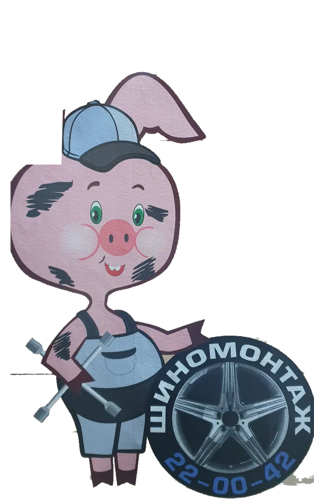
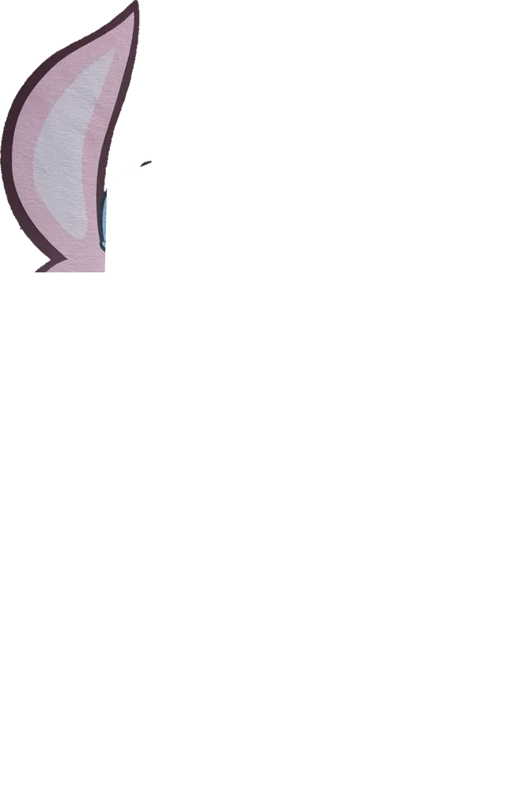
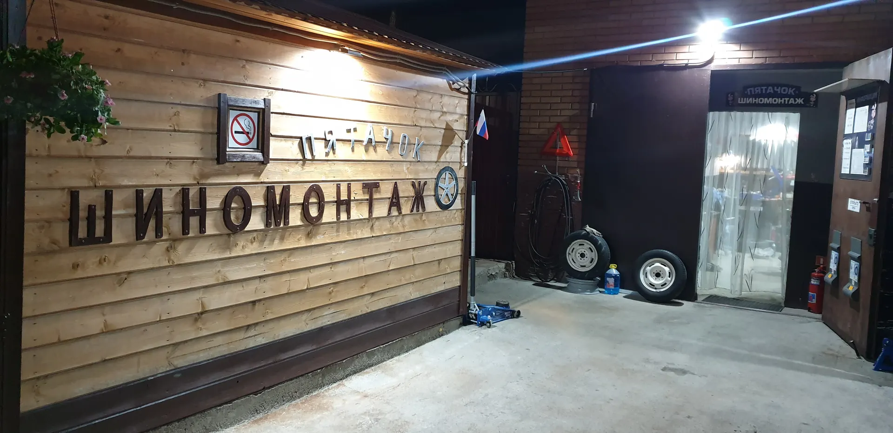
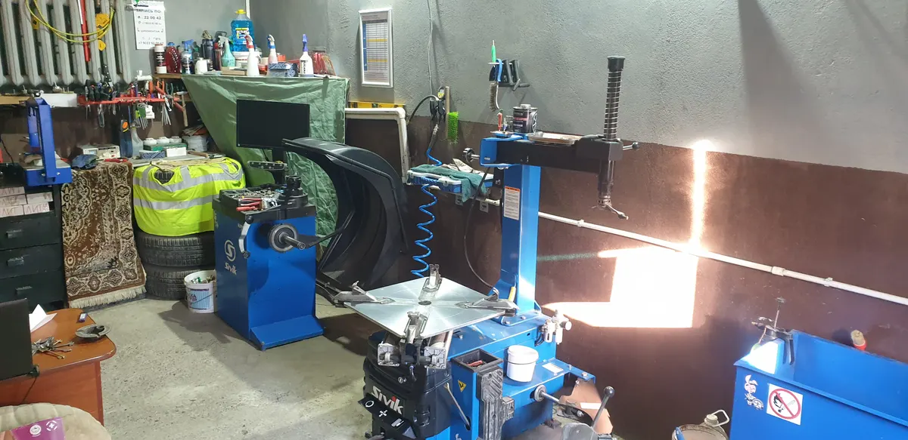
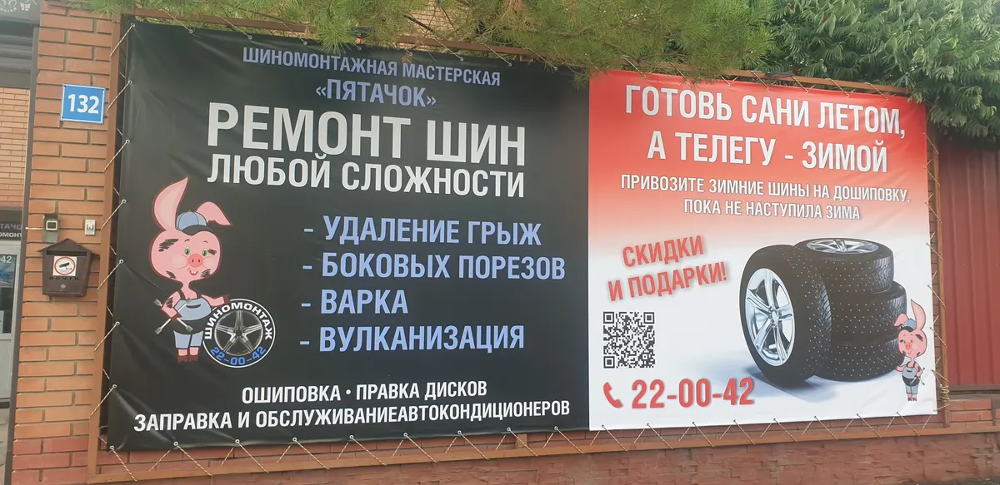
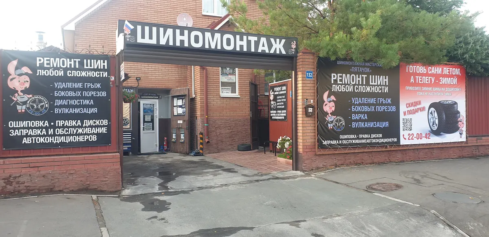

Шиномонтаж · Оренбург · ежедневно 08:00–23:00
Шиномонтаж в Оренбурге – «Пятачок» на Туркестанской, 132
Ремонт шин любой сложности, правка дисков, ошиповка. Работаем каждый день с 8 до 23, запись заранее.
- Рейтинг 5,0 на Яндекс.Картах
- Открыто ежедневно 08:00–23:00
- Предварительная запись


Пятачокремонт шин любой сложности

Услуги и цены
Цены на товары – как в вашей карточке. Стоимость работ называем при записи, по размеру колеса.
Работы
- Шиномонтаж и балансировкауточнить
- Удаление грыж и боковых порезовуточнить
- Вулканизацияуточнить
- Ошиповкауточнить
- Правка штампованных дисков500 ₽
Товары
- Незамерзайка150 ₽
- Болтысекретные – комплект 1500 ₽100 ₽ за 1 шт.
- Колпачки на вентилинабор из 4 шт. – 400 ₽100 ₽ за 1 шт.
- Балансировочный грузпод цвет диска100 ₽ за 1 шт.
- Ремкомплект для колеса500 ₽
- Пакеты для хранения шинкомплект из 4 шт.200 ₽
Диагностика, заправка и обслуживание автокондиционеров – уточняйте по телефону +7 (3532) 22-00-42.
Как это проходит
- 01
Записались заранее
Пишете в мессенджер или звоните: размер колёс и что нужно сделать.
- 02
Приехали к своему времени
Туркестанская улица, 132, вход с улицы.
- 03
Сделали работу
Шиномонтаж, ремонт, правка диска или ошиповка.
- 04
Забрали машину
Работаем ежедневно с 8 до 23.



Почему возвращаются
Быстро и чётко
Так пишут клиенты в отзывах на Яндекс.Картах.
Адекватные цены
Цены на товары открыты в прайсе, работы называем при записи.
Каждый день 08:00–23:00
Приезжайте после работы: открыто до 23:00.
Рейтинг 5,0 по 187 оценкам
Оценки оставили клиенты на Яндекс.Картах.
Отзывы с Яндекс.Карт
«Отличный шиномонтаж! Адекватные цены. Ребята большие профессионалы! Всегда всё быстро и чётко. Пользуюсь их услугами уже не первый год и впредь только к ним.»
Ксюша422 · 1 февраля
«Цены адекватные, всё делают быстро, аккуратно и без лишней суеты.»
Ярослав Клитменко · 21 октября
«Быстро, чётко. Обратилась по услуге балансировки колес. Всё сделано хорошо, спасибо! Удобная локация.»
Татьяна Чурилина · 8 марта
Отзывы с карточки на Яндекс.Картах, без правок.
Частые вопросы
Нужна ли запись?
Есть предварительная запись: приезжаете к своему времени.
Что делаете кроме переобувки?
Удаление грыж и боковых порезов, вулканизация, ошиповка, правка дисков, диагностика.
Сколько стоят работы?
Зависит от размера колеса и вида работы, называем при записи.
До скольки работаете?
Каждый день с 08:00 до 23:00.
Запишитесь на удобное время
- Адрес
- Туркестанская улица, 132, Оренбург
- Часы
- Ежедневно 08:00–23:00
- Телефон
- +7 (3532) 22-00-42